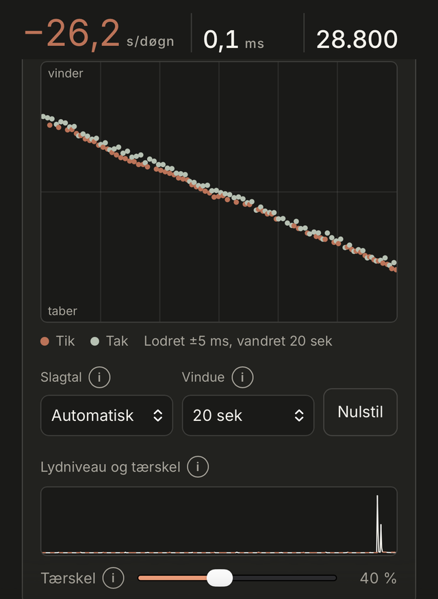

Gratis og direkte i browseren
Hvor præcist går dit mekaniske ur?
Læg uret ved telefonens mikrofon, og aflæs afvigelse og beat error efter et halvt minut.
Dine målinger forlader aldrig telefonen.

Hvad måler BeatMeter?
Inde i uret svinger uroen frem og tilbage, flere gange i sekundet. Hvert sving giver et lille tik, og det er tiden mellem tikkene, vi lytter efter.
- 01
Uroen
Svinger frem og tilbage og styrer urets tid.
- 02
Svingningen
Et mekanisk ur tikker mellem 5 og 10 gange i sekundet.
- 03
Tik og tak
Hvert sving giver et lille tik.
- 04
Mikrofonen
Telefonen lytter efter tikkene.
- 05
Målingen
Tiden mellem tikkene afgør, om uret vinder eller taber.
Sådan måler du
En måling tager et halvt minut. Resten er ro og en smule tålmodighed.
Trin 1: Læg uret på mikrofonen
Find et stille rum. Læg telefonen på et håndklæde, og læg uret direkte på mikrofonhullet, som typisk sidder i bunden af telefonen.
Trin 2: Vent
Efter 10 sekunder ligger afvigelse, beat error og slagtal fast. Du kan skifte mellem flere diagrammer og se målingen fra forskellige sider.
Trin 3: Gem flere målinger
Mål i flere stillinger. Appen starter selv en ny måling, når uret ligger stille igen. Oversigten viser gennemsnittet og forskellen mellem stillingerne.
De to tal, der fortæller, hvordan uret klarer sig
En urmager bruger en timegrapher til at lytte til værket. BeatMeter gør det samme med telefonens mikrofon.
Afvigelse pr. døgn
Hvor mange sekunder uret vinder eller taber på et døgn. COSC-kravet til certificerede kronometre er −4 til +6 sekunder i døgnet.
Beat error
Hvor skævt uroens sving til de to sider er, målt i millisekunder. På diagrammet ses det som afstanden mellem tik og tak.
Vejledninger
Alle vejledningerStøt BeatMeter
BeatMeter er gratis
Har du haft glæde af vores målinger, kan du give en kop kaffe og støtte den videre udvikling.